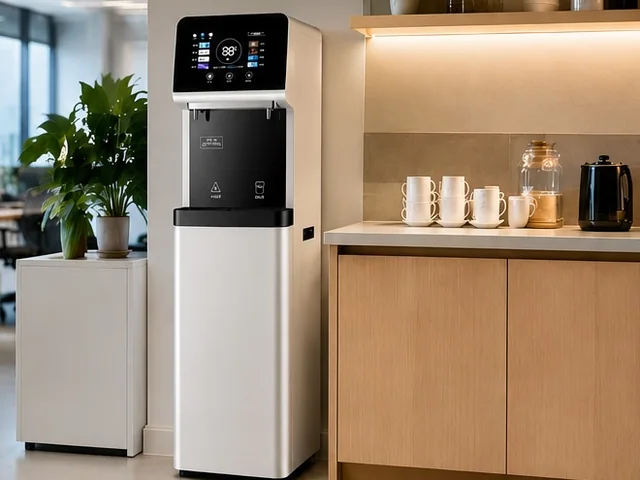
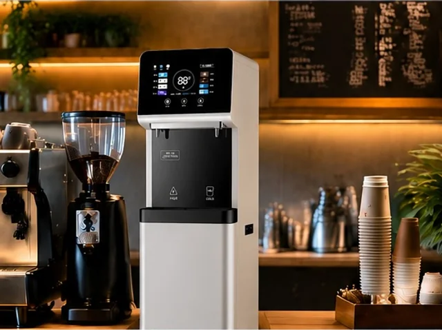
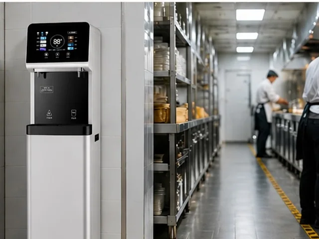

E600-S — Máy cấp nước RO dùng cho mục đích thương mại
E600-S — Máy cấp nước RO dùng cho mục đích thương mại — Có phiên bản có hoặc không có hệ thống thanh toán — Vật liệu vỏ máy: Thép mạ kẽm và kính cường lực.
Xem sản phẩm
E600-S-Min là máy cấp nước RO thương mại nhỏ gọn dành cho văn phòng, quán cà phê, bếp khách sạn và các điểm cấp nước uống có quản lý khác. Máy có vỏ màu trắng hoặc xám và có thể được cấu hình với hệ thống lọc thẩm thấu ngược 100G hoặc 400G, bình nước nóng 5 L hoặc 10 L, chức năng giám sát TDS và nhắc nhở về tuổi thọ lõi lọc.
Lưu ý về thương hiệu: KAMAMUTA trên các máy mẫu là thương hiệu dùng để trưng bày. Các dự án OEM và nhãn hiệu riêng có thể chỉ định nhãn thương hiệu, thiết kế đồ họa bảng điều khiển, tài liệu hướng dẫn và thiết kế thùng carton.
Thiết kế máy dạng tủ có thể được bố trí để cung cấp nước uống cho nhân viên, pha chế đồ uống hoặc phục vụ nước uống tại khu vực hậu cần.



| Mẫu máy | E600-S-Min |
|---|---|
| Loại sản phẩm | Máy cấp nước RO thương mại dạng đứng đặt sàn nhỏ gọn |
| Kích thước máy chưa đóng gói | 400 x 400 x 1450 mm |
| Kích thước đóng gói | 465 x 465 x 1495 mm |
| Công suất RO | 100G hoặc 400G, lựa chọn theo dự án |
| Lưu lượng nước tinh khiết | 0.26 L/min với cấu hình 100G hoặc 1.05 L/min với cấu hình 400G |
| Đầu ra nước nóng | 20 L/h |
| Tùy chọn bình nước nóng | 5 L (1000 W) hoặc 10 L (1500 W), theo bảng cấu hình được cung cấp |
| Cấu hình điện | 220 V, 50 Hz; công suất gia nhiệt định mức được xác nhận theo bình đã chọn trước khi báo giá |
| Vòi cấp nước tiêu chuẩn | Một vòi nước nóng và một vòi nước ở nhiệt độ thường |
| Tùy chọn làm lạnh | Làm lạnh điện tử 0.6 L hoặc làm lạnh bằng máy nén 8 L; thông số định mức được xác nhận theo bộ làm lạnh đã chọn |
| Bình nước ở nhiệt độ thường | Bình bằng thép không gỉ SUS 304 được dập vuốt sâu |
| Kết cấu vỏ máy | Thép mạ kẽm 0.8 mm kết hợp các chi tiết thép không gỉ, được xử lý chống gỉ và phủ sơn bột có ba tính năng bảo vệ |
| Bình áp tùy chọn | Bình tích hợp 3.2-gallon; một máy chính có thể cấp nước cho một hoặc hai máy cấp nước phụ sau khi hoàn tất thiết kế kỹ thuật cho địa điểm lắp đặt |
| Tùy chọn điều khiển | Chức năng đếm ngược 365 ngày hoặc bo mạch điều khiển đa năng IoT |
| Màu vỏ máy | Trắng hoặc xám |
| Khối lượng | Khối lượng tịnh 35 kg; khối lượng sau đóng gói 38 kg |
Để có báo giá chính xác, hãy cung cấp số người dùng dự kiến, kết quả phân tích nước đầu vào, đặc điểm sử dụng vào giờ cao điểm, các mức nhiệt độ yêu cầu, tiêu chuẩn điện, diện tích sàn có thể sử dụng, số lượng đặt hàng và điểm đến giao hàng. Những thông tin này quyết định công suất RO, phương án trữ nước, bộ làm lạnh và phụ tùng phục vụ bảo dưỡng, sửa chữa.
E600-S-Min sử dụng vỏ máy dạng đứng đặt sàn có bề ngang hẹp, dành cho những địa điểm cần máy lọc nước tích hợp mà không cần thiết bị riêng đặt trên bàn. Hai tùy chọn hoàn thiện giúp nhà phân phối bố trí máy hài hòa với khu bếp nhỏ văn phòng, quầy cà phê và khu vực phục vụ khách sạn.
Tùy chọn 100G hỗ trợ nhu cầu vừa phải tại điểm sử dụng, trong khi 400G cung cấp lưu lượng nước tinh khiết cao hơn. Khi dự án cần thêm điểm lấy nước, bình áp tùy chọn 3.2-gallon và phương án bố trí máy cấp nước phụ phải được kiểm tra dựa trên chiều dài đường ống, áp suất và việc sử dụng đồng thời.
E600-S-Min sử dụng thiết kế vỏ máy nhỏ gọn và bảng điều khiển khác, đồng thời dùng chung nền tảng có thể cấu hình về hệ thống lọc 100G/400G, bình nước nóng và chức năng giám sát đã được xác nhận cho dòng E600-S.
Tài liệu giới thiệu sản phẩm được cung cấp thể hiện các phiên bản vỏ máy màu trắng và xám. Màu sắc, nhãn thương hiệu và thiết kế đồ họa bảng điều khiển cuối cùng được xác nhận trước khi sản xuất.
Có. Việc lựa chọn công suất nên căn cứ vào chất lượng nước đầu vào, lượng tiêu thụ hằng ngày, nhu cầu cao điểm và phương án trữ hoặc phân phối nước dự kiến.
Không. Hệ thống làm lạnh và bình áp tích hợp 3.2-gallon là các cấu hình tùy chọn và phải được liệt kê trong yêu cầu báo giá.
Cung cấp số lượng, điểm đến giao hàng, số người dùng, kết quả phân tích nước đầu vào, công suất RO, dung tích bình nước nóng, yêu cầu làm lạnh, điện áp, màu vỏ máy, tệp thiết kế thương hiệu, tùy chọn điều khiển và yêu cầu đóng gói.
E600-S — Máy cấp nước RO dùng cho mục đích thương mại — Có phiên bản có hoặc không có hệ thống thanh toán — Vật liệu vỏ máy: Thép mạ kẽm và kính cường lực.
Xem sản phẩm
Máy cấp nước RO bằng thép không gỉ dùng cho mục đích thương mại E900-K27 — Kích thước: 800 x 480 x 1520 mm; Bình chứa nước nóng: 27L.
Xem sản phẩm
Máy cấp nước dạng đứng MT-E600 — Lọc nước: các tùy chọn mô-đun PP, CTO, GAC, UF hoặc RO.
Xem sản phẩmGửi thông tin về môi trường lắp đặt, số người dùng dự kiến, điều kiện nước đầu vào, công suất RO đã chọn, yêu cầu về bình nước nóng và làm lạnh, màu vỏ máy, tệp thiết kế thương hiệu, số lượng và điểm đến giao hàng.